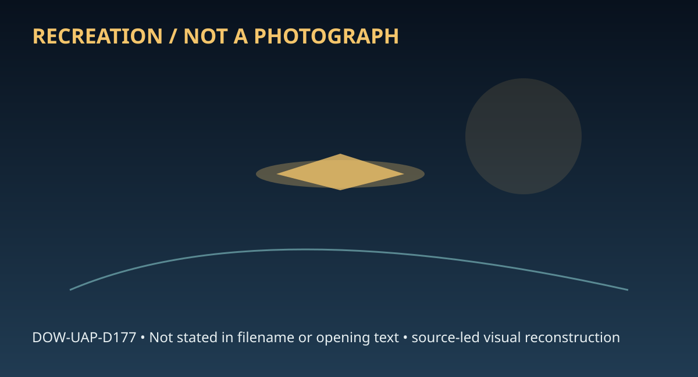

Release 07 / archival case file / DOW-UAP-D177
D177 Unresolved Uap Report Catalina Island 1955
This d177 unresolved uap report catalina places a radar thread in a 1955 Location not resolved record.
ID: DOW-UAP-D177
Filename:
DOW-UAP-D177_Unresolved_UAP_Report_Catalina_Island-1955.pdfDate marker: 1955
Location: Location not resolved
Agency or collection signal: Agency not resolved
Pages read: 4

RECREATION / NOT A PHOTOGRAPH. The diagram is an interpretive editorial aid, not source imagery.
What this document says
The opening page's extracted text begins: “-- .. PROJECT 10073 RECORD CARD 1. DATE 15 March 1955 Avalon, Catalina Isle O -.........=<..:::.:.---------''-4-.- TYt..LIP.lE'1.o""F.lllOt.18.a.S_,.E_R.lV.._A~TulO~ Na..,1u.A._......,_Llot.. ___, 0 3. DATE·TIME GROUP 7. Wo1 Balloon CONCLUSIONS P,obobly Balloon Possi bl y Bolloon Was Aircraft Probably Aircraft Possi bly Aircraft Was Astronomical Meteor LENGTH OF OBSERVATION 8. NUMBER OP OBJECTS Probably Astronomical Possibly Astronomical Other·-------- lnsuHi cient Doto for Evaluation Unknown 10. BRIEF SUMMARY OF SIGHTING Round. Changed from orange to r ed . Very bright. Fell s traight down. ATIO FORM 329 (REV 26 SEP 52} Probable meteor. Authority: NN0923007 2. LOCATION 12. C IA..\ ,ift:.,,,,, ~ 0 Local •~round-Visual O Ground-Radar GMT unknown 0 Air-Visual □ Air-Intercept Rado, ~==:::=::::::::::::::::=====--.JL,_~~~'..'__--~~~~~~ s. PHOTOS 6, SOURCE 0 Yes 0 1 __...a.u,..;,________l-....,..Ji,ta.Lil....."-8.U...---,--------1 9. COURSE 11. COMMENTS 0 O 0 a 0 D 0 , □ 0”
Across the 4 pages, the recurring terms are radar. Those details belong to this file, not to a generic case template. Page-level reading follows:
- Page 1: -- .. PROJECT 10073 RECORD CARD 1. DATE 15 March 1955 Avalon, Catalina Isle O -.........=<..:::.:.---------''-4-.- TYt..LIP.lE'1.o""F.lllOt.18.a.S_,.E_R.lV.._A~TulO~ Na..,1u.A._......,_Llot.. ___, 0 3. DATE·TIME GROUP 7. Wo1 Balloon CONCLUSIONS P,obobly Balloon Possi bl y Bolloon Was Aircraft Probably Aircraft Possi bly Aircraft Was Astronomical Meteor LENGT
- Page 2: . . •' 1 . .;'[)ATE . ' ... 2, LOCATION . 12. CONCLUSIOttS I lS M..oh 19SS Catalina Isle, California 0 Was Balloon 0 Probably Bal loon " 4. TYPE OF OBSERVATION 0 Possibly Bal loon 3. DATE•TIME GROUP Local ' Ground-Vi suol 0 Ground-Rodar □ Was Aircraft l;/2231 Z var SS □ P robobl y Ai rcroft GMT 0 Air-Vi suol □ Air-Intercept Rodar □ Possibly Aircraft s. PHPTO
- Page 3: .... -1/e z • COC 67 TH P.C'~0.1 c;p~DRO CALIF JTT?J3/CCC .7Tl'. AD DE:~ NORT0:1 AFB CALIY • J:ZD:::1corD? ADC LJT A-:'J CCLO JED·:p/co:.DR P.IR TEC}-! I NT c:n ";!F.IG}'T- P,C\TTE: SO" AFB OHIO • JEP::f"\/CO 'DR DiR OF I':T HQ 'SP.F f.\SH 25 DC • IU:CLfSSIYI:"'J ~, T:C' C- 1 PD L ACCORD 'ITH A::R 2 - 2 PI.R 7D C''/1. • ,.,..."..,... -:or o-:: UNID FLY OEJ !
- Page 4: :1. A. FLIGHT PATH AND L1]~GTE OF TIME I!~ SIGl'T, St:GG::ST ':-'OB 1.-JAS • PROBABLY l1. MET:i:OR. BRANT ' C!..IF~o::r E. CP.?..,.IP.!: l.'SAF L:TELLrc:z::cz OFFic::1 • A. NO.lE • ,... lJZ £S6\ 'MVv\ 91 60 = • N\ • • • • • • • • • • • • xe ~8~2JBA1:_JBD 2: -· ~
Historical context and disclosure schema
Read in context, this record belongs to the 1955 information environment: Agency not resolved paperwork, a Location not resolved setting, and the reporting conventions visible in the source. Its broader disclosure value is procedural as well as anecdotal: it shows how an observation, material question, investigation, or analytical program was routed, described, and preserved. That makes it comparable to other Release 07 records without collapsing unlike evidence into one event.
Evidence limits
The source establishes that this document exists and records what its authors or quoted witnesses wrote. It does not, by itself, prove the identity, performance, origin, or physical reality of the reported subject. Extraction preserves wording but cannot restore missing attachments, authenticate provenance, or independently validate testimony. Interpretations beyond the page-specific record remain hypotheses.
Source: supplied PDF in research/tranche-07. This article is a research aid, not a claim that the reported object was non-human.